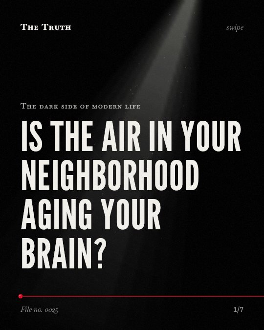

The dark side of modern life
Is the air in your neighborhood aging your brain?

PM2.5 particles are linked to a 3% increase in dementia risk per 1 μg/m3.
The air you breathe contains microscopic particles that correlate with brain aging. While some pollutants like ozone show no clear link, PM2.5 and total air pollution consistently show a positive association with dementia.
Established. Several studies combined, or official data. The evidence backs this.
What the research found
Ozone had no clear association with dementia (hazard ratio per 5 μg/m3 was 1.00 (0.98 to 1.05)).
“Ozone had no clear association with dementia (hazard ratio per 5 μg/m3 was 1. 00 (0. 98 to 1. 05); four studies).”
Meta-analysis, 2023. Wilker et al., BMJ.
The risk of dementia increased with total air pollution exposure by 1.13 (1.08–1.19).
“Pooling all eligible data demonstrated that dementia risk increased with the total AP exposure (1. 13, 1. 08–1. 19).”
Meta-analysis, 2022. Tang et al., Environmental Research.
The risk of dementia increased by 3% per 1 μg/m3 increment in PM2·5 (HR, 1.03; 95% CI [1.02–1.05]).
“The risk of dementia increased by 3% per 1 μg/m3 increment in PM2·5 (HR, 1. 03; 95% CI [1. 02–1. 05]; I2 = 100%).”
Meta-analysis, 2022. Abolhasani et al., Neurology.
The overall odds ratio of the five air pollutants above with Alzheimer's disease was 1.32 (95% CI: 1.09-1.61).
“Overall OR of the five air pollutants above with AD was 1. 32 (95% CI: 1. 09-1. 61), suggesting a positive association between ambient air pollution and AD incidence.”
Meta-analysis, 2020. Fu & Yung, Journal of Alzheimer s Disease.
The association between dementia per 10 μg/m3 increment in NOX (HR, 1.05; 95% CI [0.99–1.13]), NO2 (HR, 1.03; 95% CI [1.00–1.07]), and O3 levels (HR, 1.01; 95% CI [0.91–1.11]) was less clear.
“The association between dementia per 10 μg/m3 increment in NOX (HR, 1. 05; 95% CI [0. 99–1. 13]; I2 = 61%), NO2 (HR, 1. 03; 95% CI [1. 00–1. 07]; I2 = 94%), and O3 levels (HR, 1. 01; 95% CI [0. 91–1. 11]; I2 = 82%) was less clear”
Meta-analysis, 2022. Abolhasani et al., Neurology.
Exposure to PM2.5 is linked to a risk of 1.08 (95%CI: 1.01–1.15) for Alzheimer's disease.
“In AD, the pooled HRs for PM 2. 5 and O 3 was 1. 08 (95%CI: 1. 01–1. 15; I 2 = 99% ( P < 0. 001)), respectively.”
Meta-analysis, 2022. Dhiman et al., Neurology India.
Not all pollutants affect your brain the same way.
Total air pollution exposure increases dementia risk by 1.13. However, the link for ozone is less clear or non-existent. The risk is most evident with specific particles like PM2.5.
The invisible environment shapes your cognitive health.
That may be why your long-term memory and mental clarity are tied to the air in your neighborhood. Your daily environment is a constant factor in how your brain ages.
This part is our reading of the evidence, not a finding.
A morning walk along a busy road.
You stand on the sidewalk and watch the exhaust from the morning traffic rise into the air. You breathe it in while you walk to work.
The honest summary
The evidence suggests a positive association between air pollution, particularly PM2.5, and dementia risk, though the strength and certainty of these links vary by specific pollutant.
Many studies show high heterogeneity of effects and limited data for certain pollutants, requiring interpretation with caution.
What is the air in your neighborhood doing to your brain?
Sources
- Elissa H. Wilker, Marwa Osman, Marc G. Weisskopf (2023). Ambient air pollution and clinical dementia: systematic review and meta-analysis. BMJ. Meta-analysis, cited 184 times.
- Pengfei Fu, Ken Kin Lam Yung (2020). Air Pollution and Alzheimer’s Disease: A Systematic Review and Meta-Analysis. Journal of Alzheimer s Disease. Meta-analysis, cited 146 times.
- Jie Tang, Anthony Chen, Fan He et al. (2022). Association of air pollution with dementia: a systematic review with meta-analysis including new cohort data from China. Environmental Research. Meta-analysis, cited 45 times.
- Ehsan Abolhasani, Vladimir Hachinski, Nargess Ghazaleh et al. (2022). Air Pollution and Incidence of Dementia. Neurology. Meta-analysis, cited 86 times.
- Vikas Dhiman, Tanwi Trushna, Dharma Raj et al. (2022). Is Air Pollution Associated with Increased Risk of Dementia? A Meta-Analysis of Epidemiological Research. Neurology India. Meta-analysis, cited 18 times.
Also read for this file, not quoted
- Rogowski et al. (2025). Long-term air pollution exposure and incident dementia: a systematic review and meta-analysis.
This file was researched and drafted by software, then checked by rules a model cannot talk its way around: each quote above was matched word for word against the paper, and every number had to appear in it. How files are made.